5.1 Signalisierung und Leitungscodes
Unterschiede SPS und Bussysteme
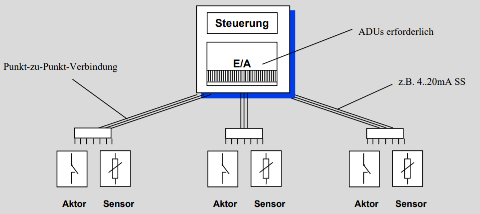 
Feldbus
- Bei einer konventionellen SPS sind alle Komponenten sternförmig verbunden (analoges oder digitale Signale werden übertragen)
- Beim Bus ein Datenkabel (Buskabel)
- Zentraler Aufbau mit SPS und steckbaren Schnittstellenkarten (Master) möglich
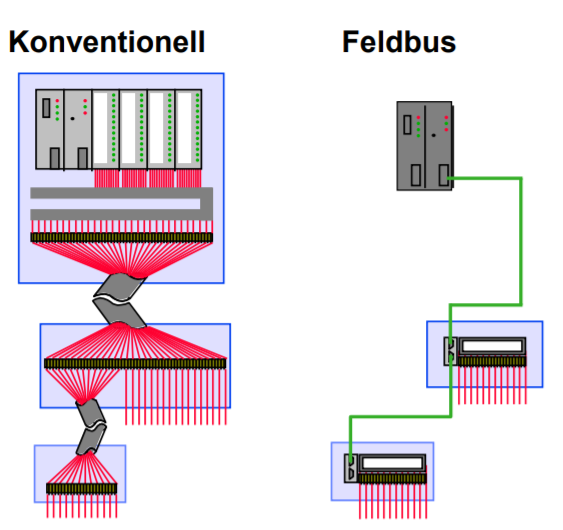
Vielfalt an Bussystemen
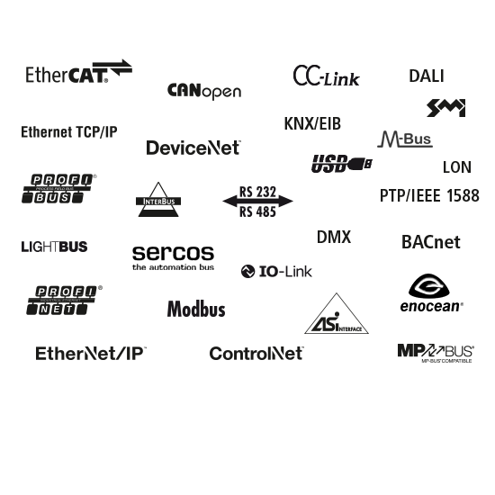
- Spezielle Anwendungsfälle in Gebäuden
- DALI, KNX, ...
- Geschwindigkeit und Zuverlässigkeit
- CAN-Bus in Fahrzeugen
- Funk Reichweite und Energiebedarf
- LoRaWAN, Bluetooth Low Energy
Unterscheidungsmerkmale von Bussystemen
- Telegramminhalt: welche Information
- Topologie: Verkabelung
- Teilnehmerhierarchie: Master, Slave, ...
- Adressierung: Wie erreicht man Komponenten
- Buszugriffsverfahren: Wer sendet wann?
- Signalisierung: Wie werden Telegramme übertragen
- Übertragungsmedium: z.B: Kabel oder Funk
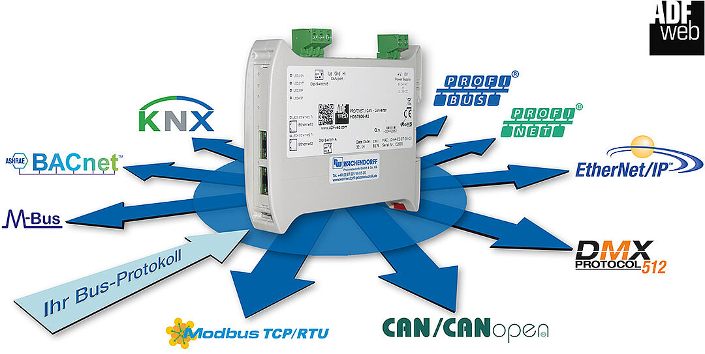
Unterscheidungsmerkmale von Bussystemen
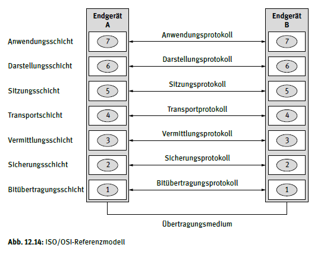
- Telegramminhalt: welche Information
- Topologie: Verkabelung
- Teilnehmerhierarchie: Master, Slave, ...
- Adressierung: Wie erreicht man Komponenten
- Buszugriffsverfahren: Wer sendet wann?
- Signalisierung: Wie werden Telegramme übertragen
- Übertragungsmedium: z.B: Kabel oder Funk
Bitübertragungsschicht / Signalisierung von Telegrammen

- Wireless über Wellen
- Frequenzmodulation
- Amplitudenmodulation
- Kabelgebundene Kodierung
- Über Spannungslevel
Informationsgehalt von Telegrammen
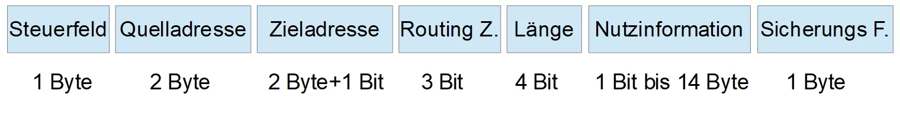
- Steuerfeld: Priorität der Nachricht
- Quelladresse: Absender (vgl. MAC-Adresse)
- Zieladresse: Empfänger (vgl. MAC-Adresse)
- Routing Zähler: Zählt wie oft über Koppler gesendet (verhindert Irrläufer)
- Nutzinformation: Eigentlich Information (z.B. Messwerte eines Sensor)
- Sicherungs-Feld: Wurden die Daten richtig übertragen (vgl. Hash)
Symbolrate und Bitrate

- Anzahl der übertragenen Symbole pro Zeiteinheit
- In der Abbildung rechts gibt es ein Symbolalphabet \({\displaystyle d_{i}\in \{-1,1\}}.\)
- Die Bitrate ist die Anzahl der übertragenen Bits pro Zeiteinheit (bei einem Bit pro Symbol entspricht die Bitrate der Symbolrate)
- \(1 \text{ Baud} = 1 \frac{\text{Symbol}}{\text{s}}\)
- Beispiele
- CAN-Bus: \(5 \text{ bis } 500.000 \text{ Baud}\)
- DMX: \(500.000 \text{ Baud}\)
- DALI-Bus: \(1.200 \text{ Baud}\)
✍️ Aufgabe 5_1_1: Symbolrate
- Wie groß ist jeweils die Symbolrate und die Bitrate?
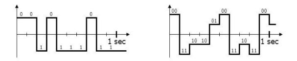
Lösung
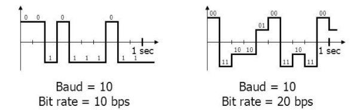
- In beiden Fällen ändert sich die Spannung zehn mal pro Sekunde \(\text{Symbolrate} = 10 \text{ Baud}\)
- Links: Es gibt zwei Spannungen, jedes Symbol codiert ein Bit \(\text{Bitrate} = 10 \frac{\text{Bit}}{\text{s}}\)
- Rechts: Es gibt vier Spannungen, jedes Symbol codiert zwei Bit \(\text{Bitrate} = 20 \frac{\text{Bit}}{\text{s}}\)
Leitungscodes
- Wie wird die Symbolrate ausgenutzt?
- z.B. Non-Return-to-Zero High Level
- Hohes Spannungslevel codiert
1 - in jedem Schritt wird ein Bit übertragen
- dazwischen gibt es keine zurückfallen auf eine neutrale Spannung
- Baud-Rate entspricht Bit-Rate
- \(1 \text{ Baud} \cdot \frac{\text{Bit}}{\text{Signal}}= 1 \frac{\text{Bit}}{\text{s}}\)
Weitere Leitungscodes
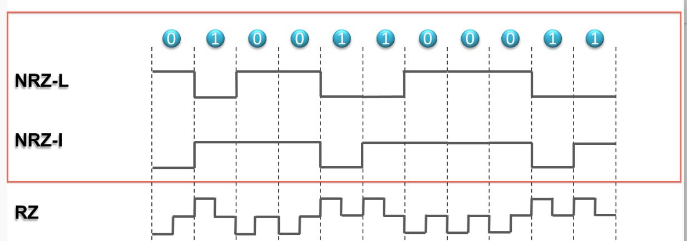
✍️ Aufgabe 5_1_2: Leitungscodes
- Erklären Sie verbal, wie die Leitungscodes funktionieren
- Non-Return-to-Zero Low Level
- Non-Return-to-Zero Inverted
- Return-to-Zero
- Welche Vor- und Nachteile haben die verschiedenen Leitungscodes?
Lösung
- Non-Return-to-Zero Low Level: eine
1wird durch eine niedrige Spannung codiert - Non-Return-to-Zero Inverted: Bei jedem Auftreten einer
1wird die Spannung invertiert - Return-to-Zero: eine
1wird durch eine hohe Spannung codiert, nach jedem Bit wird auf eine neutrale Spannung zurückgekehrt (halbiert die Bitrate bei gleicher Baud-Rate)
Übermittlung der Taktrate
- Signal ohne Taktrate (z.B. Non-Return-to-Zero Low Level): 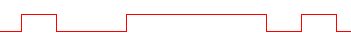
- Ohne gemeinsame Uhr nur schwer zu entschlüsseln
- Lösungen:
- Einsatz einer Return-to-Zero-Code Kodierung
- Pausen mit definierter Länge mit definiertem Rhythmus z.B. bei RS-232
- Separate Leitung für Takt z.B. bei I²C-Bus
Synchrone Datenübertragung


- Neben der Datenleitung
SDAgibt es eine TaktleitungSCL, mit welcher der Master vorgibt, wannSDAgelesen wird (z.B.I²C-Bus) - Probleme:
- Taktleitung benötigt zusätzliche Leitung
- Bei langen Leitungen kann es zu Phasenverschiebungen kommen. D.h. bis die Spannung auf der Datenleitung ,welche vom Busteilnehmer gesendet wurde, ankommt, ist der Takt beim Master schon weitergezogen Quelle
Asynchrone Datenübertragung
- Jeder Busteilnehmer verfügt über eine eigene Taktquelle (
Sample Clock), die deutlich schneller taktet als die Datenübertragung - Durch die Übertragung eines Start- und Stop-Bits wird die Taktquelle des Senders und Empfängers synchronisiert (z.B. RS-232)
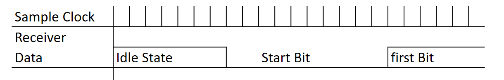
Serielle und Parallele Busse

- Mit mehreren parallelen Leitungen können ebenfalls mehr Symbole bei gleicher Baud-Rate übertragen werden
- Kaum Einsatz in Feldbussen (welche Geräte im Feld verbinden), häufig jedoch in Computern (PCI, ATA)
Übertragungsarten

- Simplex: Eine Richtung
- Half-Duplex: Beide Richtungen, aber nicht gleichzeitig
- Full-Duplex: Beide Richtungen gleichzeitig
Beispiel: Universal Serial Bus (USB 1.1 und 2.0)

- Leitungen sind über Schirmung gegen Störungen abgesichert
- Zwei Drähte für Spannungspotentiale
- Zwei Drähte für Daten (Werte immer gegenläufig - half duplex)
- Kein Draht für Takt (spezielle NRZ-S Kodierung mit Bit Stuffing)
- \(480 \text{ Baud}\) Quelle
{kind=link}
🤓 NRZ-S: Bitwechsel bei Null
Bei jeder 0 im Datenbit findet ein Wechsel statt
# Beispiel 1:
Datenbits (logisch): 1 1 1 1 1 1 1 1
phys. Leitung bei Ausgangszustand „1“: 1 1 1 1 1 1 1 1
phys. Leitung bei Ausgangszustand „0“: 0 0 0 0 0 0 0 0
# Beispiel 2:
Datenbits (logisch): 0 0 0 0 0 0 0 0
phys. Leitung bei Ausgangszustand „1“: 0 1 0 1 0 1 0 1
phys. Leitung bei Ausgangszustand „0“: 1 0 1 0 1 0 1 0
# Beispiel 3:
Datenbits (logisch): 1 1 1 1 1 0 1 0 1 0 1 1 0 0 0 1
phys. Leitung bei Ausgangszustand „1“: 1 1 1 1 1 0 0 1 1 0 0 0 1 0 1 1
phys. Leitung bei Ausgangszustand „0“: 0 0 0 0 0 1 1 0 0 1 1 1 0 1 0 0